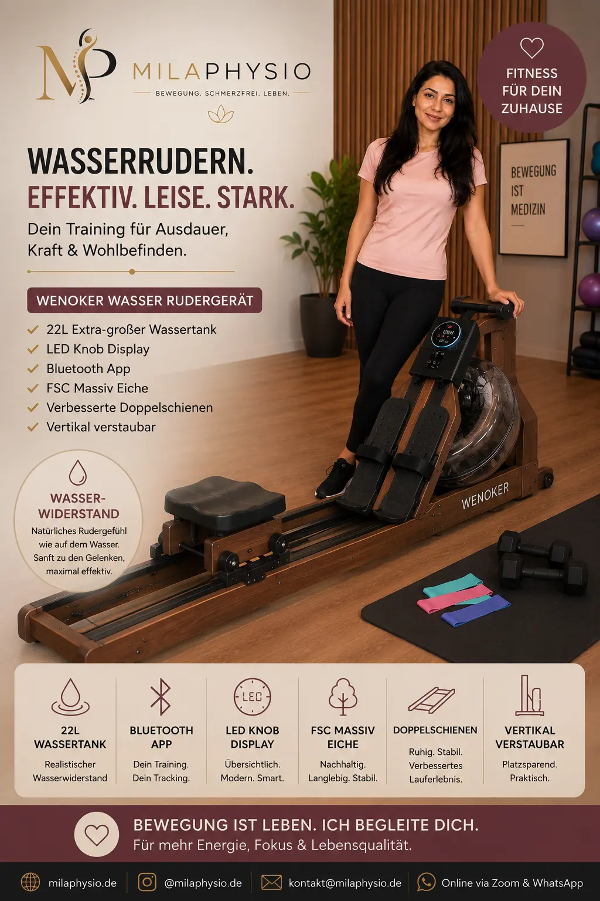

Concept2 RowErg Modell D
Ein hochwertiges Rudergerät für das Training zu Hause, das Kraft, Ausdauer und Ganzkörperbewegung miteinander verbinden kann.
Bei Amazon kaufenMeine Einschätzung als Physiotherapeutin
Das Rudern auf einem Gerät wie dem Concept2 RowErg gehört für mich zu den interessanten Trainingsformen, weil dabei viele große Muskelgruppen gleichzeitig beteiligt sind.
Ein Rudergerät kann deshalb eine gute Möglichkeit sein, Kraft- und Ausdauertraining miteinander zu verbinden. Gleichzeitig kann die Bewegung bei korrekter Technik den gesamten Körper einbeziehen.
Besonders wichtig ist beim Rudern allerdings die richtige Bewegungsausführung. Die Belastung sollte schrittweise gesteigert werden und zum eigenen Trainingszustand passen.
Für mich ist das Gerät deshalb vor allem als Trainingsmöglichkeit interessant und nicht als Therapie für bestimmte Beschwerden.
Für wen kann ein Rudergerät interessant sein?
Ein Rudergerät kann für Menschen interessant sein, die zu Hause ein abwechslungsreiches Ganzkörper- und Ausdauertraining durchführen möchten.
Ausdauer
Rudern kann in ein regelmäßiges Ausdauertraining integriert werden.
Ganzkörpertraining
Beim Rudern arbeiten Beine, Rumpf und Oberkörper gemeinsam.
Kraft & Bewegung
Die Ruderbewegung verbindet Kraftentwicklung mit einer dynamischen Bewegung.
Kalorienverbrauch
Durch die Beteiligung vieler Muskelgruppen kann Rudern ein intensives Training ermöglichen.
Training zu Hause
Ein Rudergerät ermöglicht regelmäßiges Training unabhängig vom Wetter.
Trainingssteigerung
Trainingsdauer und Intensität können schrittweise angepasst werden.
Wann würde ich ein Rudergerät empfehlen?
Ich finde ein Rudergerät besonders interessant für Menschen, die ihr Ausdauertraining abwechslungsreicher gestalten und gleichzeitig mehrere Muskelgruppen beanspruchen möchten.
Besonders interessant für
- allgemeines Fitnesstraining
- Ausdauertraining
- Ganzkörpertraining
- Training zu Hause
- abwechslungsreiche Bewegung
Was ich beachten würde
- Die richtige Rudertechnik ist entscheidend.
- Trainingsintensität langsam steigern.
- Bei akuten Schmerzen zunächst die Ursache abklären.
- Besonders bei Rückenbeschwerden auf eine kontrollierte Bewegung achten.
Vorteile und mögliche Grenzen
Vorteile
- Ganzkörpertraining
- Kraft und Ausdauer kombinierbar
- Training zu Hause möglich
- Trainingsintensität anpassbar
- Abwechslungsreiche Trainingsmöglichkeit
Mögliche Grenzen
- Falsche Technik kann zu unnötiger Belastung führen.
- Nicht jede Person ist für das Training auf einem Rudergerät geeignet.
- Das Gerät benötigt ausreichend Platz.
- Bei bestehenden Beschwerden sollte das Training individuell angepasst werden.
Die richtige Rudertechnik ist entscheidend
Beim Rudern sollte die Bewegung kontrolliert und flüssig ausgeführt werden. Die Beine beginnen die Bewegung, anschließend folgt der Oberkörper und zuletzt die Arme.
Beim Zurückführen erfolgt die Bewegung in umgekehrter Reihenfolge. Wichtig ist dabei eine kontrollierte Rumpfposition und ein gleichmäßiger Bewegungsablauf.
Gerade Anfänger sollten zunächst mit einer niedrigen Intensität trainieren und die Technik beherrschen, bevor die Belastung erhöht wird.
Mein Tipp für den Einstieg
Wenn Sie bisher wenig gerudert haben, würde ich zunächst kurze Trainingseinheiten wählen und auf eine saubere Bewegung achten.
Nicht die Geschwindigkeit sollte am Anfang im Vordergrund stehen, sondern die kontrollierte Bewegung und eine gute Körperposition.
Mit zunehmender Erfahrung können Trainingsdauer und Intensität schrittweise gesteigert werden.
Mein Fazit
Das Concept2 RowErg Modell D finde ich interessant für Menschen, die zu Hause ein vielseitiges Ganzkörper- und Ausdauertraining durchführen möchten.
Besonders gefällt mir am Rudertraining die Kombination aus Bewegung, Kraft und Ausdauer.
Entscheidend ist jedoch die Technik. Wer bereits Beschwerden hat, sollte das Training nicht einfach trotz Schmerzen fortsetzen, sondern zunächst klären, welche Belastung sinnvoll ist.
Hinweis: Diese Seite enthält Affiliate-Links. Wenn Sie über einen solchen Link einkaufen, kann ich eine Provision erhalten. Für Sie entstehen dadurch keine zusätzlichen Kosten. Meine Empfehlungen basieren auf meiner persönlichen Einschätzung und ersetzen keine individuelle medizinische Beratung.